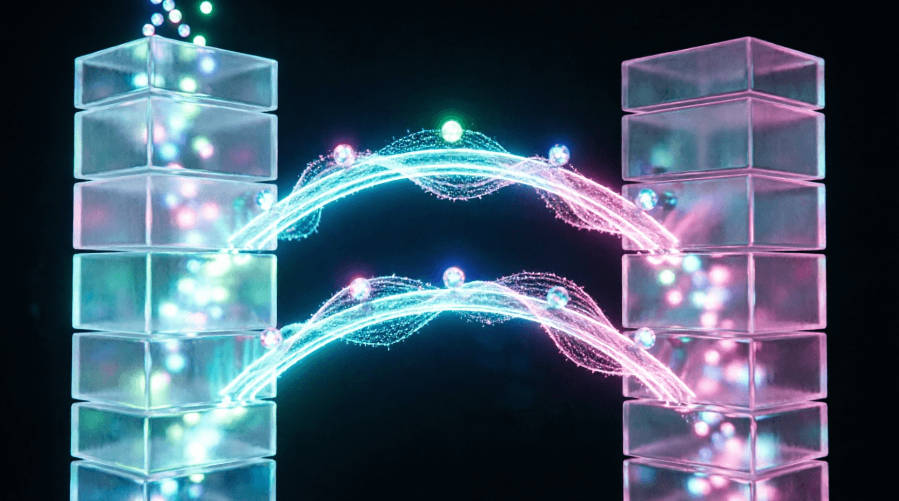

Урок 14: Диффузионные модели (Diffusion)
ML-инженер • Блок 3: Современные тяжелые архитектуры
Мы продолжаем изучение современных тяжелых архитектур. Текстовые нейросети предсказывают дискретные токены, а генераторы изображений работают в непрерывном пространстве пикселей. Диффузионные модели (DDPM, Stable Diffusion) произвели революцию в компьютерном зрении. Этот урок посвящен математической логике зашумления и созданию нейросети, предсказывающей шум.
Если бы мы зашумляли картинку шаг за шагом в цикле, это заняло бы слишком много времени. Математика DDPM (Denoising Diffusion Probabilistic Models) позволяет получить зашумленное изображение на любом шаге времени $t$ напрямую через формулу:
Где $x_0$ — чистая картинка, $\epsilon$ — случайный шум, а $\bar{\alpha}_t$ — коэффициент расписания дисперсии, который определяет, сколько исходной информации осталось на шаге $t$.
Напишем код, который готовит обучающие примеры для нейросети: берет чистые картинки, выбирает для каждого случайный шаг времени $t$ и накладывает соответствующее количество шума.
import torch
import torch.nn as nn
class DiffusionPipeline:
def __init__(self, num_timesteps=1000, beta_start=1e-4, beta_end=0.02):
self.num_timesteps = num_timesteps
# Линейное расписание добавления шума (Betas)
self.betas = torch.linspace(beta_start, beta_end, num_timesteps)
# Вычисляем производные коэффициенты (Alphas) по математическим формулам DDPM
self.alphas = 1.0 - self.betas
self.alphas_cumprod = torch.cumprod(self.alphas, dim=0) # Тот самый ᾱ_t
def add_noise(self, x_0, t):
# x_0: исходные картинки формы [B, C, H, W]
# t: тензор случайных шагов времени формы [B]
batch_size = x_0.shape[0]
# Генерируем чистый гауссов шум той же формы
noise = torch.randn_like(x_0)
# Извлекаем нужные коэффициенты ᾱ_t для каждого элемента в батче
sqrt_alphas_cumprod = torch.sqrt(self.alphas_cumprod[t]).view(-1, 1, 1, 1).to(x_0.device)
sqrt_one_minus_alphas_cumprod = torch.sqrt(1.0 - self.alphas_cumprod[t]).view(-1, 1, 1, 1).to(x_0.device)
# Прямое аналитическое зашумление по формуле
x_t = sqrt_alphas_cumprod * x_0 + sqrt_one_minus_alphas_cumprod * noise
return x_t, noiseКакую архитектуру использовать для удаления шума? Сеть должна принимать тензор формы `[B, C, H, W]` и возвращать тензор точно такой же формы (предсказанный шум). Стандартный выбор — архитектура U-Net со сквозными связями (Skip-connections) между энкодером и декодером.
class TimeEmbedding(nn.Module):
def __init__(self, dim):
super().__init__()
self.dim = dim
self.linear_1 = nn.Linear(dim // 4, dim)
self.activation = nn.SiLU()
self.linear_2 = nn.Linear(dim, dim)
def forward(self, t):
# Превращаем скалярное время t в синусоидальный вектор признаков
half_dim = self.dim // 8
emb = math.log(10000) / (half_dim - 1)
emb = torch.exp(torch.arange(half_dim, device=t.device) * -emb)
emb = t.unsqueeze(1) * emb.unsqueeze(0)
emb = torch.cat((torch.sin(emb), torch.cos(emb)), dim=-1)
# Проекция через MLP блок
return self.linear_2(self.activation(self.linear_1(emb)))Функция потерь в диффузии на удивление проста. Мы обучаем модель (обозначим её как $\epsilon_\theta$) минимизировать обычную среднеквадратичную ошибку (MSE) между реальным шумом $\epsilon$, который мы наложили в пайплайне, и шумом, который сеть разглядела в картинке $x_t$:
Напишите псевдокод тренировочного цикла для диффузионной модели на одну эпоху. Внутри цикла для каждого батча чистых картинок: 1) сгенерируйте случайный вектор времени t; 2) получите зашумленные картинки x_t и целевой шум с помощью класса DiffusionPipeline; 3) прогоните их через условную нейросеть predicted_noise = model(x_t, t); 4) рассчитайте MSE-ошибку и вызовите backward(). Опишите словами, как изменится инференс (генерация с нуля), когда мы начнем цикл от $t = T-1$ до $0$.
import torch
import torch.nn as nn
# pipeline = DiffusionPipeline(...)
# model = UNetWithTimeEmbedding(...)
# optimizer = torch.optim.Adam(model.parameters(), lr=3e-4)
def train_epoch(dataloader, pipeline, model, optimizer, device):
model.train()
total_loss = 0
for batch in dataloader:
# batch: чистые картинки формы [B, C, H, W]
x_0 = batch.to(device)
batch_size = x_0.shape[0]
# 1. Случайные шаги времени для каждого примера в батче
t = torch.randint(0, pipeline.num_timesteps, (batch_size,), device=device)
# 2. Добавляем шум и получаем целевой шум
# ВАШ КОД ЗДЕСЬ: используйте pipeline.add_noise(...)
# 3. Предсказываем шум через модель (передаем t как эмбеддинг)
# ВАШ КОД ЗДЕСЬ: predicted = model(x_t, t)
# 4. Считаем MSE loss между реальным и предсказанным шумом
# ВАШ КОД ЗДЕСЬ: loss = F.mse_loss(predicted, target_noise)
# 5. Обратный проход и обновление весов
optimizer.zero_grad()
loss.backward()
optimizer.step()
total_loss += loss.item()
return total_loss / len(dataloader)
# Инференс (генерация): опишите словами логику цикла от t=T-1 до 0import torch
import torch.nn as nn
import torch.nn.functional as F
def train_epoch(dataloader, pipeline, model, optimizer, device):
model.train()
total_loss = 0
for batch in dataloader:
x_0 = batch.to(device)
batch_size = x_0.shape[0]
# 1. Случайные шаги времени
t = torch.randint(0, pipeline.num_timesteps, (batch_size,), device=device)
# 2. Добавляем шум и получаем целевой шум
x_t, target_noise = pipeline.add_noise(x_0, t)
# 3. Предсказываем шум через модель
predicted_noise = model(x_t, t) # t автоматически конвертируется в эмбеддинг
# 4. Считаем MSE loss
loss = F.mse_loss(predicted_noise, target_noise)
# 5. Обратный проход
optimizer.zero_grad()
loss.backward()
optimizer.step()
total_loss += loss.item()
return total_loss / len(dataloader)
# Инференс (генерация с нуля):
# 1. Начинаем с чистого шума: x_T ~ N(0, I)
# 2. Для t от T-1 до 0:
# - Предсказываем шум: ε_θ(x_t, t)
# - Вычитаем предсказанный шум с учетом коэффициентов расписания
# - Добавляем небольшой шум (кроме шага t=0)
# 3. Возвращаем очищенное изображение x_0После обучения модель умеет предсказывать шум $\epsilon_\theta(x_t, t)$. Чтобы сгенерировать новое изображение, мы запускаем обратный диффузионный процесс:
Приложение бесплатное. Было и останется.
Если проект помог вам или вашим близким — можете поддержать разработку добровольным переводом.
❤️ Спасибо за поддержку!
Перейти в каталог
